Edit mode - Curves menu
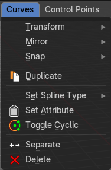
Transform Submenu
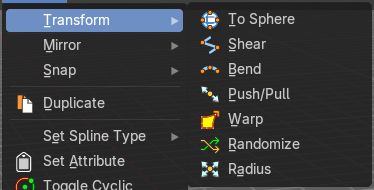
To Sphere
Shapes a selection of objects into the shape of a sphere. The calculation happens with the object origins.
In Object mode this tools requires to have more than one object selected.
Usage

Select the objects, activate the tool, then drag the mouse in the 3D viewport. In the header you will read the current factor then. Which tells you how close you are towards the sphere shape.
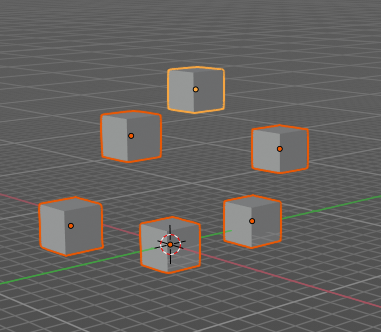
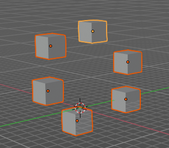
Last Operator To Sphere
Factor
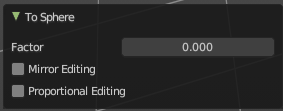
The factor to transform the selection into a shape form.
Proportional editing
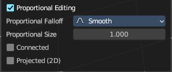
Enables proportional editing. Activating proportional editing reveals further settings.
| Entry | What it does |
|---|---|
| Proportional Falloff | Adjust the falloff methods. |
| Proportional Size | See and adjust the falloff radius. |
| Connected | The proportional falloff gets calculated for connected parts only. |
| Projected(2D) | The proportional falloff gets calculated in the screen space. Depth doesn't play a role. When it's in the radius, then it gets calculated. |
Shear
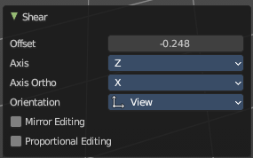
Shear shears the selection.
In Object mode this tools requires to have more than one object selected.
Last Operator Shear
| Entry | What it does |
|---|---|
| Offset | Adjust an offset. |
| Axis | Defines one axis of the imaginary shear axis plane. |
Axis Ortho

Defines the other axis of the imaginary shear axis plane.
Orientation
Choose the orientation for the shear action.
Proportional editing
Enables proportional editing. Activating proportional editing reveals further settings.
| Entry | What it does |
|---|---|
| Proportional Falloff | Adjust the falloff methods. |
| Proportional Size | See and adjust the falloff radius. |
| Connected | The proportional falloff gets calculated for connected parts only. |
| Projected(2D) | The proportional falloff gets calculated in the screen space. Depth doesn't play a role. When it's in the radius, then it gets calculated. |
Bend
Bends the selection.
In Object mode this tools requires to have more than one object selected.
Push/Pull
It pushes or pulls the object positions relative to the center of the selection.
In Object mode this tool requires to have more than one object selected.
Last Operator Push/Pull
Distance
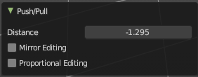
Adjust the strength of influence of the tool.
Mirror Editing
Enables mirror editing.
Proportional editing
Enables proportional editing. Activating proportional editing reveals further settings.
| Entry | What it does |
|---|---|
| Proportional Falloff | Adjust the falloff methods. |
| Proportional Size | See and adjust the falloff radius. |
| Connected | The proportional falloff gets calculated for connected parts only. |
| Projected(2D) | The proportional falloff gets calculated in the screen space. Depth doesn't play a role. When it's in the radius, then it gets calculated. |
Warp

Warps a mesh selection between two defined points. This also works with curves.
Last operator Warp
| Entry | What it does |
|---|---|
| Warp Angle | The strength of the warp effect. |
| Offset Angle | An offset angle to bend side wards. |
Min

The start point.
Max
The end point.
Radius
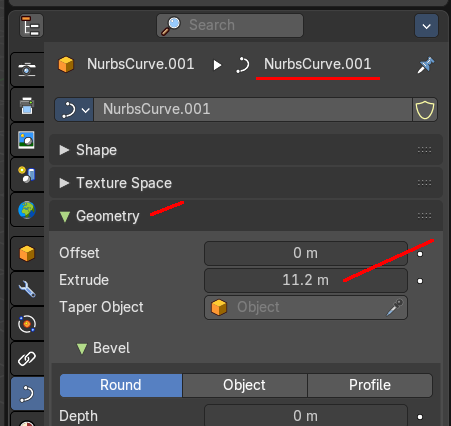
Scales the selected geometry of a curve along its normals. Transform orientation and Pivot point gets ignored.
A positive value pushes the vertices outwards. A negative value pushes the vertices inwards.
The curve needs to have geometry !
Last Operator Transform
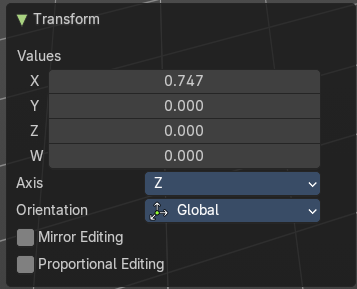
Values
The transform values.
Axis
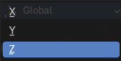
The transform axis.
Orientation

Choose the orientation.
| Entry | What it does |
|---|---|
| Mirror Editing | Enable Mirror Editing. |
| Proportional editing | Enables proportional editing. Activating proportional editing reveals further settings. · Proportional Falloff: Adjust the falloff methods. · Proportional Size: See and adjust the falloff radius. · Connected: The proportional falloff gets calculated for connected parts only. · Projected(2D): The proportional falloff gets calculated in the screen space. Depth doesn't play a role. When it's in the radius, then it gets calculated. |
Mirror submenu
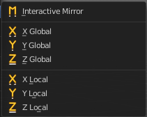
Mirror mirrors the selected geometry along the defined axis.
Interactive Mirror
Mirror by hotkeys. You activate the tool, type in x for x global for example, or x x for x local. And the selection gets mirrored
X Global, Y Global etc.
Mirrors the selection around the chosen axis.
Last Operator Mirror

The Last Operator Mirror panel gives you tools to adjust the mirror action.
Orientation
Orientation is a drop-down box . Choose the type of orientation for the mirroring action.
Constraint Axis
Constraint Axis gives you again the possibility to define the mirror axis. You can choose more than one axis here.
Snap submenu
Snap

Choose several methods to snap one element to another. The menu items should be self explaining.
Last operator Snap Selection to Cursor

Some snap operations shows a last operation panel, some not.
| Entry | What it does |
|---|---|
| Offset | If the selection should snap as a whole, or if each individual element of the selection should snap. |
| Rotation | If the selection should be rotated to match the cursor. |
Set Attribute
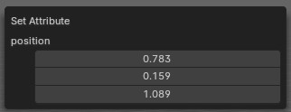
Set the position attribute of the selected elements. The values can be adjusted in the popup.
Delete
Deletes the selected hair curves.
Operators
Duplicate
Duplicates the current selection. This can be a single control point or a whole curve.
The copy sticks to the mouse until you release it. A Right click while moving will reset the position of the duplicate. The duplicated part will be part of the same object.
When you drag the duplicate around you will see the position values in the header.
Last Operator Duplicate
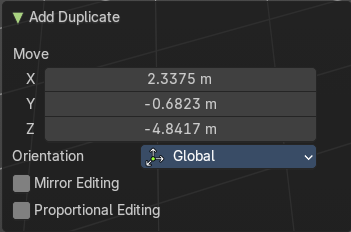
Move X , Y , Z
Orientation
Choose the orientation.
| Entry | What it does |
|---|---|
| Mirror Editing | Enable Mirror Editing. |
| Proportional editing | Enables proportional editing. Activating proportional editing reveals further settings. · Proportional Falloff: Adjust the falloff methods. · Proportional Size: See and adjust the falloff radius. · Connected: The proportional falloff gets calculated for connected parts only. · Projected(2D): The proportional falloff gets calculated in the screen space. Depth doesn't play a role. When it's in the radius, then it gets calculated. |
Set Spline Type
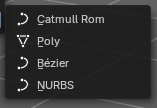
With set Spline Type, you can set the type of the curve.
- Catmul Rom is an interpolated spline system for smooth curves.
- Poly is a straight line between the control points.
- Bezier has curve handlers.
- A NURBS curve has a control cage.
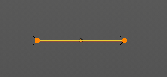
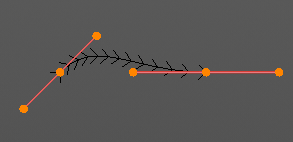
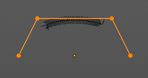
Last Operator Set Spline Type
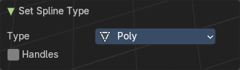
| Entry | What it does |
|---|---|
| Type | Type is a drop-down box . Choose the spline type |
| Handles | Use Handles when converting Bezier curves into polygons. |
Set Attribute
Set values of the attibute for selected elements. The selected geometry will be set to the chosen vector 3 value.
Last Operator Set Attribute
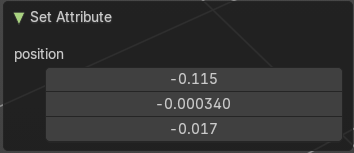
Position
The vector 3 values.
Toggle Cyclic
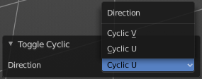
Toggle Cyclic closes or opens the curve.
Last Operator Toggle Cyclic
Direction
Direction is a drop-down box . Choose the direction in which the curve gets closed.
| Entry | What it does |
|---|---|
| Separate | Separates the selection into a new object. |
| Delete | Deletes the selected hair geomety. |